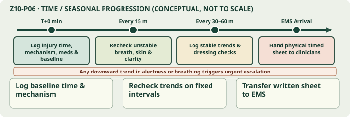

Z10-P06 · Wilderness medicine · New manuscript
Track patient trends over time with written logs for EMS handoff
Record objective timed observations so delayed rescuers can detect silent clinical deterioration immediately.
When it applies · Any injured or ill patient waiting more than fifteen minutes for evacuation or clinical evaluation.
Equipment · Waterproof notepad or index card, pencil (works in freezing wet weather), and watch.

Actions
- Write down the exact injury/onset time, mechanism of harm, allergies, current medications, and baseline mental status (alert, confused, responds to voice, or unresponsive) right after initial stabilization.[M20, T06]
- Re-check and log breathing effort, skin color/warmth, bleeding dressing saturation, pain changes, and mental clarity at steady intervals—roughly every 15 minutes for unstable patients or every 30 to 60 minutes if stable.[M20, M05]
- Hand the written time-stamped sheet directly to EMS or SAR clinicians on arrival rather than relying on memory under stress.[M20, T06]
Failure recognition · Relying on verbal memory across a two-hour carryout and forgetting when a tourniquet was applied or when confusion first started.[M20, M02]
Verify · Confirm times, baseline symptoms, interventions, and trend direction (improving, steady, or worsening) are legible on paper.[M20, ED]
Stop or change course · Downward trend in responsiveness, rising breathing effort, spreading swelling, or new neurological signs requires immediate emergency escalation regardless of earlier stability.[T02, M20, M11]
Evidence and editorial notes
- M02 · American College of Surgeons · STOP THE BLEED Training Course (current web edition)
- Section: Wound Packing and Commercial Tourniquet Application · Conditions: Severe extremity bleeding uncontrolled by direct pressure; trained responder with commercial windlass tourniquet
Support: Apply a commercial tourniquet high and tight on an extremity (never over a joint), tighten until bleeding stops, note the application time, and leave it in place for EMS.
Limitations: Improvised tourniquets fail frequently; formal hands-on training is required before operational reliance. · Conflicting evidence: None; strictly distinguishes commercial tourniquets from improvised bands.
Editorial note: Governs extremity hemorrhage escalation and strict EMS handoff documentation. · Specialist reviewer: Trauma EMS and wilderness medicine
Primary source · checked 2026-11-24 - M05 · NIH / MedlinePlus · Shock (current web edition)
- Section: Recognizing Circulatory Shock and Positioning · Conditions: Injured or ill patient with pale cool clammy skin, rapid weak pulse, confusion, or dizziness
Support: Treat suspected shock as a life-threatening emergency: call 911, control external bleeding, keep the person warm and insulated from cold ground, and do not give food or drink.
Limitations: Field responders cannot diagnose internal hemorrhage or administer IV fluids. · Conflicting evidence: None; reinforces keeping suspected shock patients NPO and warm.
Editorial note: Core shock recognition and stabilization boundary in Z10. · Specialist reviewer: Emergency and wilderness medicine
Primary source · checked 2026-11-24 - M11 · NIH / MedlinePlus · Head Injuries (current web edition)
- Section: Head Injury, Concussion Signs, and Spinal Precautions · Conditions: Falls, struck-by-branch trauma, or head impact with confusion, vomiting, worsening headache, or neck pain
Support: Assume possible head or spinal injury after significant impact; keep the head and neck still, monitor level of responsiveness, call EMS for red flags (loss of consciousness, repeated vomiting, unequal pupils, confusion, neck pain), and never resume hazardous travel.
Limitations: Delayed intracranial bleeding can worsen hours after an initially mild-seeming impact. · Conflicting evidence: None; mandates conservative evacuation for any neurologic red flag.
Editorial note: Grounds head-trauma, concussion, and spinal-motion-restriction cards. · Specialist reviewer: Neurotrauma and wilderness EMS
Primary source · checked 2026-11-24 - M20 · NIH / MedlinePlus · First Aid Overview (current web edition)
- Section: Lay First-Aid Scope, Kit Readiness, and Documentation · Conditions: Pre-trip kit preparation and remote patient monitoring
Support: Maintain an inspected, unexpired first-aid kit matched to your actual training, keep written patient observations (time, responsiveness, breathing, symptoms, interventions) for EMS handoff, and practice skills in certified courses.
Limitations: Carrying advanced medical instruments without clinical training adds risk rather than capability. · Conflicting evidence: None; aligns with ARC and NPS-K.
Editorial note: Anchors kit sizing, SOAP-style lay observation logs, and scope-of-practice cards. · Specialist reviewer: Wilderness EMS and clinical education
Primary source · checked 2026-11-24 - T02 · American Red Cross · First Aid Steps (current web edition)
- Section: First Aid Steps > Call 9-1-1 · Conditions: Lay emergency response to unresponsiveness, abnormal breathing or severe bleeding
Support: Activate EMS and get needed equipment. Follow dispatcher directions and act within training.
Limitations: Remote locations may delay EMS arrival, requiring sustained stabilization after activation. · Conflicting evidence: None; aligns with NPS-E.
Editorial note: Mandates early emergency activation and dispatcher adherence. · Specialist reviewer: EMS and wilderness medicine
Primary source · checked 2026-11-24 - T06 · NPS · Outdoor Emergency Plan (current web edition)
- Section: If you get lost or hurt; call for help · Conditions: Outdoor US emergency
Support: Communicate location, last known point, situation and needs. Stay put when unable to establish a safe route unless immediate danger requires movement.
Limitations: Cell signal is unreliable in backcountry terrain; pre-trip plans bridge communication gaps. · Conflicting evidence: None; core lost-person decision rule.
Editorial note: Foundation for stay/signal/move and dispatch handoff cards. · Specialist reviewer: Search and rescue
Primary source · checked 2026-11-24
Source lineage · NIH MedlinePlus and NPS Emergency Plan; new manuscript · Classification · New manuscript.